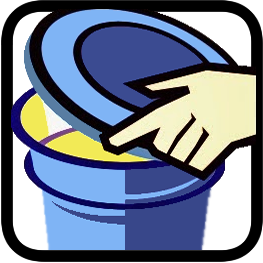
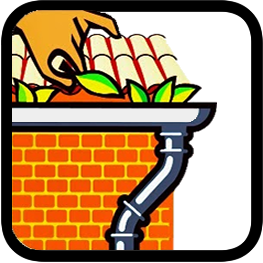
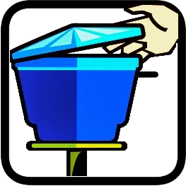
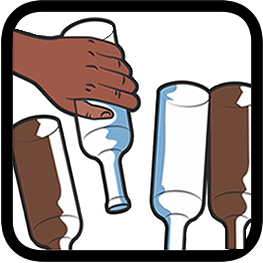
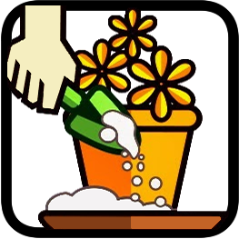
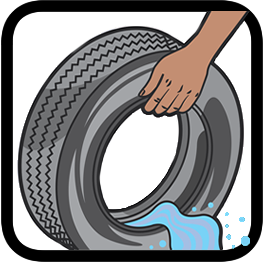
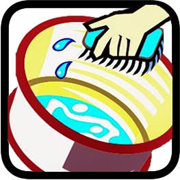
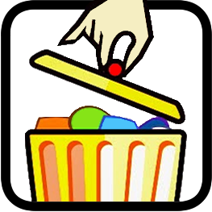

Mantenha bem tampado tonéis e barris d'água.

Remova folhas, galhos e tudo que possa impedir água correr pelas calhas.

Mantenha sempre a caixa d'água sempre fechada com tampa adequada.

Guarde garrafas sempre de cabeça para baixo.

Encha de areia até a borda os pratinhos dos vasos de planta.

Entregue seus pneus velhos ao serviço de limpeza urbana ou guarde-os sem água em local coberto e abrigados de chuva.

Lave semanalmente por dentro com escovas e sabão os tanques utilizados para armazenar água.

Coloque o lixo em sacos plásticos e mantenha a lixeira bem fechada. Não jogue lixo em terrenos baldios.
Não deixe a água da chuva acumulada sobre a laje.